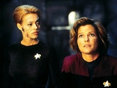
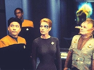
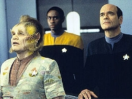
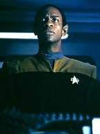
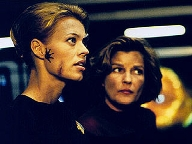
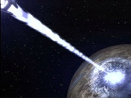
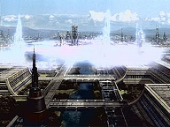
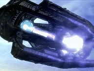
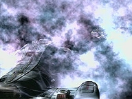
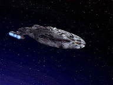

| MANCHETE
DO EPISDIO
Tripulao
forada a abandonar a nave
Episdio
anterior | Prximo episdio Sinopse:
Data Estelar: 51268.4.  A
Voyager inaugura o seu novo laboratrio de Astromtricas, que possui
tecnologia de mapeamento muito mais precisa do que o sistema original. Traa-se
um novo curso para casa que cortar anos de viagem, levando os tripulantes
atravs do territrio dos Zahl. A regio, no
entanto, est em disputa com os Krenim, que a reivindicam como parte de seu
prprio imprio. Frente ao problema diplomtico, os Zahl tranqilizam
Janeway, dizendo que no passado os Krenin dominaram aquele espao com o uso de
tecnologia temporal, mas que seu poderio militar foi h muito desmantelado.
Subitamente, os sensores da Voyager detectam uma exploso de energia temporal e
a nave atingida pela forte onda de choque. Os Zahl desaparecem, junto com as
memrias da tripulao sobre eles. A Voyager se v enfrentando os agora
poderosos Krenim, que usam torpedos cronotnicos para atac-la.
A alguns anos-luz de l, Annorax, capito da nave Krenim
que dizimou os Zahl, avalia seus esforos e descobre que, ao apagar da
Histria os inimigos, restaurou quase completamente o imprio. Mas Annorax
no se satisfar at que cada colnia seja refeita. Enquanto isso, a
tripulao consegue destruir uma nave inimiga, mas os danos so srios: a
Voyager no tem mais condies de continuar a sua jornada. Seven
of Nine encontra uma ogiva no detonada e ainda ativa presa no casco. Tuvok
estima que o torpedo explodir em minutos, mas Seven quer determinar a sua
variao temporal para modificar os escudos. Ela consegue obter o dado, mas a
ogiva explode logo em seguida.
 Os novos escudos temporais conseguem deter os torpedos Krenim.
Alheio ao que acontece, Annorax dispara sua arma novamente e o continuum
tempo-espao mais uma vez alterado. S que agora a nova blindagem da
Voyager a protege dos efeitos da onda. Os tripulantes ficam incrdulos ao ver
que a nave de guerra contra a qual lutavam subitamente ficou pequena. Annorax
percebe que os escudos temporais da Voyager atrapalharam seus clculos, o que
resultou no encolhimento do Imprio Krenim a apenas algumas colnias. Ele
localiza a nave e transporta Chakotay e Tom para estudos. Depois, aciona um raio
de energia cronotnica para apagar a Voyager da Histria. Janeway assume o
leme e consegue tir-los de l em dobra alta, mas os danos estruturais so
irreversveis. A capit obrigada a ordenar a evacuao de seus oficiais,
mantendo apenas os chefes de departamento consigo na Voyager. Espera resgatar os
tripulantes abduzidos e, de alguma forma, reunir-se novamente com os mdulos de
escape.
Comentrios:
 "Year of Hell"
tido por muitos fs como o melhor episdio de Voyager. Se no ,
ao menos est entre os melhores. Vem recheado de efeitos especiais
espetaculares, entretm, sensibiliza e traz elementos slidos. Mas uma coisa
fica clara nos primeiros momentos: trata-se de um roteiro "e se?".
Aqueles que ficaram surpresos ao ver a nave seriamente avariada na primeira
metade da histria e animaram-se com o to reclamado realismo, tomam logo
conscincia de que tudo ser devidamente "resetado". um pacote de
boa fico-cientfica enriquecido com excelentes dramatizaes, mas que,
por fim, "nunca ter acontecido".
A novidade: o episdio introduz um novo formato ao trazer
na tela a inscrio "Dia 1", assim que a histria comea. Nesse
dia, a tripulao chega ao territrio dos Krenim, aliengenas que tiveram
referncia em "Before and After", da
temporada anterior. Naquele segmento, no qual Kes salta atravs de diferentes
linhas temporais, o telespectador havia tido uma amostra prvia do que viria a
ser toda essa premissa "e se?".
 Agora,
tudo est acontecendo. A princpio, os Krenim no so uma ameaa. Parecem
at uma espcie pateticamente decadente. Mas a regio atingida por uma
misteriosa onda de choque temporal que altera toda a situao. As naves Krenim
agora so poderosas aves de guerra equipadas com torpedos baseados em
tecnologia cronotnica. Passam pelos escudos da Voyager como se ela estivesse
com as defesas baixadas. Surge a pergunta que no cala: Kes no havia alertado
a capit sobre essa raa?! Por que a tripulao no saltou em dobra alta
para evitar confrontos com eles? Parece que os eventos de "Before
and After" foram totalmente esquecidos -- "apagados da
Histria".
 Talvez
-- e a nica explicao compreensvel -- aquelas informaes tenham
deixado de existir com o desaparecimento dos Zahl. uma pena a extino dos
Zahl. Raramente a Voyager encontra raas to amistosas. E o representante
desta particularmente expressivo. Ao contrrio dos Krenim, que aqui foram
uma decepo. Eram muito mais sinistros e sombrios em "Before
and After". E o que explica a sua intolerncia, a xenofobia? No
h razo. Apenas so agressivos e arrogantes.
Annorax maravilhosamente interpretado por Kurtwood
Smith. Assim como Chakotay, o telespectador conquistado por seu carisma,
entende os motivos que o levam a agir daquela maneira. um homem atormentado.
, tambm, paciente e determinado. Fica claro que sua misso se trata mais de
um tipo de vendeta pessoal do que algo racional. Ele deve ter cometido algum
grave erro e busca redeno.
 Essa
trama paralela, a princpio, pouco tem a ver com o dilema da Voyager, que passa
a maior parte do episdio tentando se proteger dos ataques Krenim. A nave
severamente avariada. Merece aplausos a equipe de produo da srie, por seu
trabalho sensacional no processo de "destruio". tudo muito
convincente. Tambm os efeitos visuais em CGI so magnficos. O destaque vai
para a seqncia em que metade do deck 5 explode.
O ponto alto do roteiro, sem dvida, o impacto da
situao sobre os tripulantes. "Year of Hell" o que Voyager
sempre deveria ter sido. mais sobre sobrevivncia do que protocolos ou
explorao espacial. Trata-se de uma famlia unida por um objetivo coletivo.
Todos trabalham em seu melhor, mesmo diante de anteparos caindo, rupturas no
casco, vtimas e falta de perspectiva frente. Janeway capit em todos os
sentidos. Est determinada, corajosa. Quer proteger seus subordinados custe o
que custar. Pe a mo na massa e no perde a graa.
 So
os pequenos detalhes que fazem a diferena no episdio. Tuvok perde a viso, Harry
e B'Elanna ficam presos durante horas no turboelevador, a xcara da sorte de
Janeway cai no cho e quebra-se, o Doutor forado a sacrificar dois colegas
para salvar muitos outros. Realismo. Tudo em "Year of Hell"
honra a premissa original da srie como poucos segmentos o fizeram at ento.
O que foge razo a insistncia da tripulao em
permanecer em territrio Krenim aps os primeiros ataques. Janeway
irredutvel quanto a isso. "Vamos pelo espao deles, quer queiram, quer
no". um questionamento vlido, mas que at passa desapercebido entre
tantas informaes apresentadas na histria. Pode ser que, entre tantas
intervenes temporais, o territrio dos aliengenas expandiu-se a ponto de
envolver completamente a nave.
 Mesmo
assim, se no fosse essa "falha", o roteiro no faria sentido. Aps
dois meses em territrio hostil, a tripulao encontra um modo de proteger a
Voyager dos torpedos cronotnicos. Ao ativar os novos defletores, no entanto,
no sabe que est atrapalhando os clculos de Annorax. Uma nova onda de
choque passa pela nave, desta vez sem afet-la das alteraes. A Voyager, que
fora avaliada como um componente inerte, passou a ser elemento determinante na
sbita reduo do imponente Imprio Krenim a uma civilizao incipiente,
pr-dobra.
Annorax localiza e traa um curso para a nave da
Federao, a fim de saber do que se trata. Coleta amostras do casco e
transporta Tom e Chakotay para estudos. Excelente o trecho em que o capito
Krenim lamenta ter que destruir a Voyager, reconhecendo que est diante de
pessoas inocentes. Mas o sucesso da misso sempre prioritrio. Tem que
deter tudo e todos que se pe em seu caminho.
 Janeway
assume o leme e a Voyager consegue escapar em dobra alta. Mas os danos
estruturais so extremos. A capit ordena a evacuao dos tripulantes. A
seqncia em que os mdulos de escape so lanados ao espao traam um
paralelo interessante com o filme oitavo filme da franquia, "Primeiro
Contato", lanado no ano anterior. Alis, as referncias aparecem
tambm quando Seven resgata Harry e B'Elanna do turboelevador. Ela menciona a
nave Phoenix e a presena dos Borgs na ocasio.
No constante vai-e-vem da histria, o tema permanece
sempre o mesmo: famlia. Quando Janeway d a ordem final, seu discurso
emociona. A prpria voz falha de Mulgrew denota tribulao. Ela revela
emoo, mas no perde a compostura. Abraa uma alferes com firmeza e
assegura que todos se vero novamente. A cena foi de uma dramaticidade mpar.
 "Year
of Hell" peca basicamente por dois motivos. Primeiro, porque, ao final,
o telespectador sabe que os eventos convenientemente sero corrigidos e a
Voyager voltar sua glria original na concluso. Depois, porque em
momento algum foram fornecidos motivos para o esquecimento das informaes
apresentadas em "Before and After".
Entre mortos e feridos, no entanto, aqui salvaram-se todos. Nota alta para o
segmento.
Citaes:
Annorax - "Time is patient. So we
must be patient with it."
("O tempo paciente. Ento devemos ser pacientes com ele.") Comandante
Krenin - "Reverse course... or be destroyed."
("Revertam o curso... ou sejam destrudos.")
Janeway - "With all due respect, unless you've got simething a little
bigger in your torpedo tubes I'm not turning around."
("Com todo respeito, a no ser que tenha algo um pouco maior nos seus
tubos de torpedo eu no darei a meia-volta.") Janeway
- "We've done nothing to provoke these attacks."
("No
fizemos nada para provocar estes ataques.")
Comandante Krenin - "Your presence in our space is provocation enough."
("A sua presena em nosso espao provocao suficiente.") Janeway
- "I'll be in my Ready Room. You have the Bridge... what's left of it."
("Estarei em meu gabinete. A Ponte sua... o que sobrou dela.") Chakotay
- "We should consider leaving the ship behind, breaking the crew into
smaller groups. Escape pods, shuttles, each with its own course. If all goes
well, we'll rendezvouz on the other side of Krenin space."
("Devemos considerar deixar a nave para trs, dividir a tripulao em
grupos menores. Mdulos de escape, naves auxiliares, cada um com o seu curso.
Se der tudo certo, nos encontraremos no outro lado do espao Krenin. ")
Janeway
- "Then what?"
("E depois?")
Chakotay - "We'll cross that bridge when we come to it. But, at least,
we'd be increasing our chances of survival."
("Lidaremos com isso quando chegar a hora. Mas, pelo menos, estaramos
aumentando nossas chances de sobrevivncia.")
Janeway - "Abandon
ship? The answer is no. I'm not breaking up the family, Chakotay. We are
stronger as a team. One crew. One ship. The moment we split apart, we lose the
ability to pull our talents, we become vulnerable, we'll get picked off one by
one. Now I say we make our stand together."
("Abandonar a
nave? A resposta no. Eu no vou dividir a famlia, Chakotay. Somos mais
fortes como um time. Uma tripulao. Uma nave. Na hora em que nos separamos,
perdemos a habilidade de reunir nossos talentos, nos tornamos vulnerveis,
seremos pegos um a um. Eu digo: resistimos juntos.") Janeway - "We
are going through their space whether they like it or not."
("Atravessaremos o espao deles, quer queiram, quer no.") Annorax
- "You are a long way from home. In a matter of speaking, so am I.
Unfortunately one one of us can go home again. Your sacrifice will restore the
lives of countless millions. I'm sorry."
("Voc est a um longo caminho de casa. De certo modo, eu tambm.
Infelizmente, apenas um de ns pode ir para casa de novo. O seu sacrifcio
restaurar a vida de incontveis milhes. Sinto muito.") Janeway - "Each
of you has done your best. But determination alone isn't going to hold this
ship together. It's time we face reality. We've lost nine decks. More than
half of the ship has been destroyed. Life support is nearly gone. Voyager can
no longer sustain its crew. I promised myself that I would never give this
order, that I would never break up this family. But asking you to stay would
be asking you to die. You will proceed to the escape pods and evacuate this
vessel. Set your course for the Alpha Quadrant. Along the way, try to find
allies. Secure faster ships if you can. Anything to get home. The senior staff
and I will remain on board as long as possible. We will try, somehow, to
rescue Tom and Chakotay. The escape pods are equiped with subspace beacons.
That's how we'll keep track of you. When we find each other again... and we
will... we will find each other again... I expect all of you to be in one
piece, with some interesting stories to tell. Good luck."
("Cada um de vocs fez o seu melhor. Mas apenas a determinao no
manter esta nave inteira. hora de encarar a realidade. Perdemos nove
decks. Mais da metade da nave foi destruda. O suporte de vida quase se foi.
A Voyager no pode mais sustentar sua tripulao. Prometi a mim mesma que
nunca daria esta ordem, que nunca dividiria esta famlia. Mas pedir para
ficarem seria pedir para morrerem. Vocs seguiro para os mdulos de escape
e evacuaro esta nave. Tracem curso para o Quadrante Alfa. No caminho, tentem
encontrar aliados. Consigam naves mais rpidas se puderem. Tudo para chegar
em casa. Os oficiais superiores e eu ficaremos a bordo enquanto for possvel.
Tentaremos, de algum modo, resgatar Tom e Chakotay. Os mdulos de escape
esto equipados com sinais subespaciais. assim que os manteremos vista.
Quando nos encontrarmos de novo.. e ns vamos... ns vamos nos encontrar de
novo... eu espero que todos estejam inteiros, com histrias interessantes
para contar. Boa sorte.")
Trivia:
 O aniversrio de Janeway no dia 20 de maio.
O aniversrio de Janeway no dia 20 de maio.
Seven of Nine menciona que os Borgs estiveram presente no lanamento da
primeira nave com velocidade de dobra da Terra, a Phoenix de Zefram Cochrane,
mas o assunto no mais detalhado no episdio.
Os Krenim so mencionados no episdio Before
and After, mas aparentemente ningum lembra disso em
Year of Hell.
Kurtwood Smith, o Annorax, j apareceu em "Jornada
nas Estrelas VI" como o presidente da Federao. Ele bem
conhecido por seu papel de vilo no primeiro Robocop e protagoniza a srie
Thats 70s Show. Ficha
tcnica: Direo de
Allan Kroeker
Escrito por Brannon Braga e Joe Menosky
Exibido em 05/11/1997
Produo: 076 Elenco: Kate
Mulgrew como Kathryn Janeway
Robert Beltran como
Chakotay
Roxann Biggs-Dawson como B'Elanna Torres
Robert
Duncan McNeill como Tom Paris
Ethan Phillips como
Neelix
Robert Picardo como Doutor
Tim Russ
como Tuvok
Jeri Ryan como Seven of Nine
Garrett Wang como Harry Kim Elenco
convidado:
Kurtwood Smith como Annorax
John Loprieno como Obrist
Peter Slutsker como Comandante Krenim
Rick Fitts como Zahl
Deborah Levin como Alferes
Lang
Sue Henley como Alferes
Brooks
Episdio
anterior | Prximo episdio
|